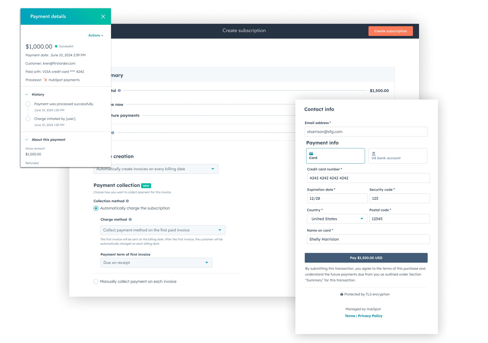
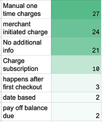
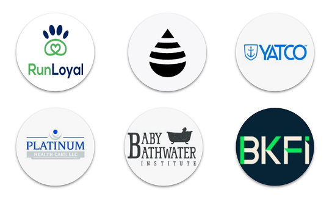
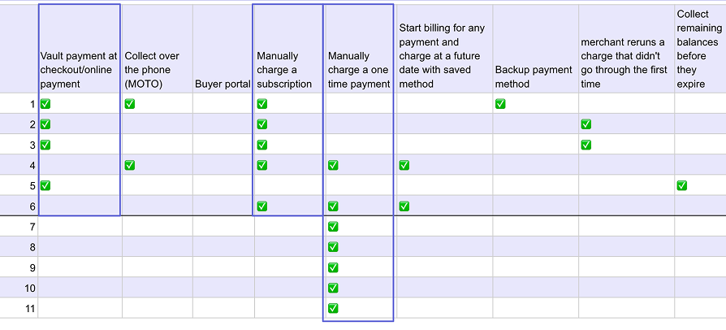
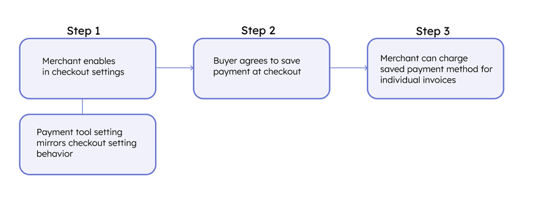
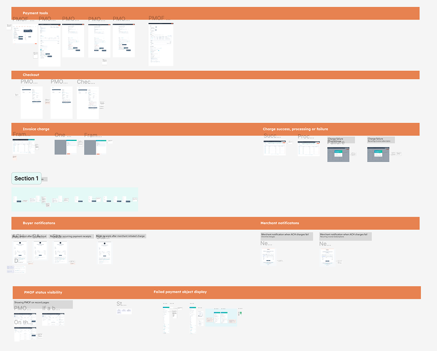
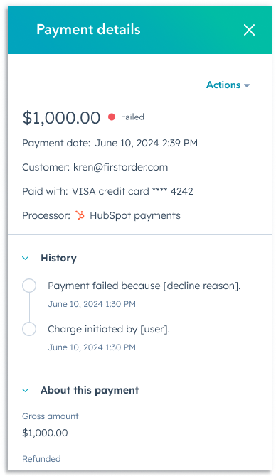
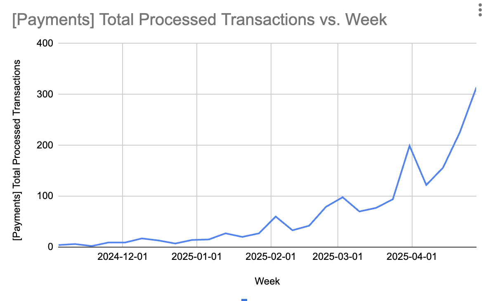
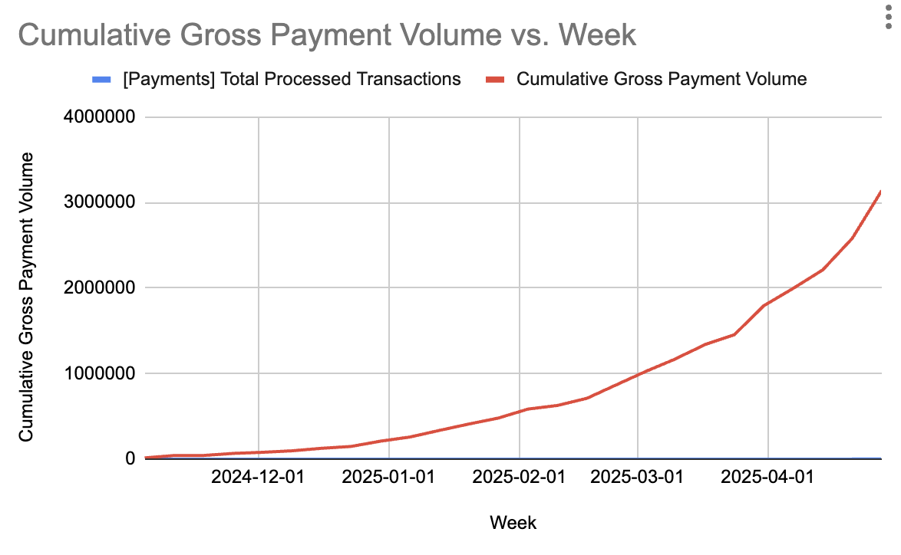

Finding 01
Visibility into charges was essential
Merchants needed to see who initiated a charge — and to receive email notifications that included the reason for any decline.
Case Study 03
"Get paid on time, on your terms." Giving HubSpot Commerce Hub merchants the ability to securely store and reuse customer payment methods — the product line's most-requested feature, and its top priority for 2024.

The Opportunity
HubSpot's Commerce Hub users had been asking for the ability to store payment methods — a payment method on file, vaulted and reusable — for years. Without it, every charge started from scratch, and merchants couldn't automate a cent of recurring revenue.
Competitive research confirmed it was a critical gap. Internally it was described by our commerce support specialists as "a blocker to adoption." Leadership made it the product line's top priority for 2024.
"A blocker to adoption."
The opportunity was to design a secure, trustworthy way to store a payment method once and reuse it everywhere Commerce Hub needed to charge — turning a years-long request into on-time payments and recurring revenue for merchants.
My Role
I was the UX and product DRI (Directly Responsible Individual) for the entire project — owning it from the first round of research through the MVP pitch, design across multiple teams, user testing, and the path to launch.
What I owned
The end-to-end UX and product direction — research, MVP definition, the leadership pitch, design, testing, and launch milestones.
Who I partnered with
Designers across five different teams, plus legal and the knowledge base team on consent language, and engineering on scope and estimates.
How decisions were made
Research-first and evidence-led — secondary research and interviews framed the MVP, and customer testing re-scoped what shipped.
Process
Seven steps — from a year of customer feedback to an approved MVP and a tested, launch-ready design.
I analyzed 12 months of customer feedback, tagging the primary themes to surface the key use cases driving years of requests.

I ran user interviews to validate those primary use cases and gather the qualitative "why" behind the feedback — completing the picture the data alone couldn't.

I tagged the primary themes from interview transcripts and triangulated those insights against the prior year of feedback — locking in the real problem before designing a solution.

I drafted high-level mockups and pitched an MVP solution alongside a set of post-release milestones. The MVP was approved.

I collaborated with designers across five different teams, developing multiple design options to put in front of customers.

I tested two different prototypes with customers. The findings reshaped the design — and are detailed in the next section.

I adjusted the designs based on testing insights, partnered with legal and the knowledge base team on consent language, and re-scoped milestones against customer feedback and engineering estimates to ship.
What Testing Revealed
Testing two prototypes with customers surfaced what merchants and their buyers actually needed.
Finding 01
Merchants needed to see who initiated a charge — and to receive email notifications that included the reason for any decline.
Finding 02
Merchants required both global settings and per-customer opt-out capabilities — not a single blanket switch.
Finding 03
Many merchants expected to handle compliance outside the Commerce Hub experience, rather than inside our flows.
Finding 04
Buyers were caught off guard by checkout consent checkboxes — a signal the friction was sitting in the wrong place.
Key Decisions
Three decisions, each driven directly by what customers told us.
Decision 01
We considered
Keeping charge records minimal and behind the scenes to ship a simpler first version.
We chose
Surfacing who initiated each charge, plus email notifications that spell out decline reasons.
Because
Testing showed visibility into charges was essential to merchant trust and follow-up.
Decision 02
We considered
A single global on/off setting for storing and charging payment methods.
We chose
Both global settings and per-customer opt-out, so merchants could flex by relationship.
Because
Merchants needed flexibility — different customers warranted different handling.
Decision 03
We considered
Enforcing compliance inside the product and requiring mandatory checkout consent checkboxes.
We chose
Letting merchants own compliance externally and removing the mandatory consent checkboxes.
Because
Many merchants expected to handle compliance themselves, and the checkboxes surprised customers and added friction.
Outcomes & Impact
Six months after release, stored payment methods reached 50% adoption in Commerce Hub and generated $3.1 million in revenue — a level of adoption matched only by the invoices feature over the previous two years. A years-long customer request became one of the product line's most successful launches.


Next Chapter
With consented, reusable payment methods in place, the natural next layers are autopay and subscription billing — and, further out, the agentic frontier: letting an AI agent initiate a payment against a scoped, revocable mandate. The same trust questions that shaped this work carry straight into the Payments for the Agentic Era platform.
The thread I keep pulling on: storing a credential is a trust contract. Get the consent, the visibility, and the control right, and everything built on top of it — recurring revenue today, agent-initiated payments tomorrow — inherits that trust.